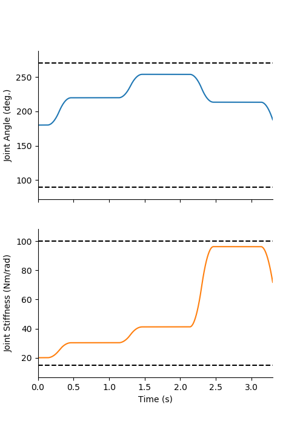
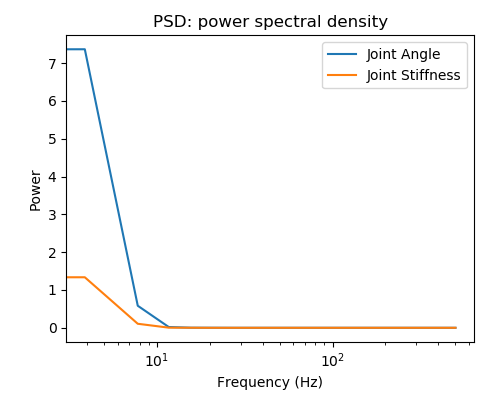
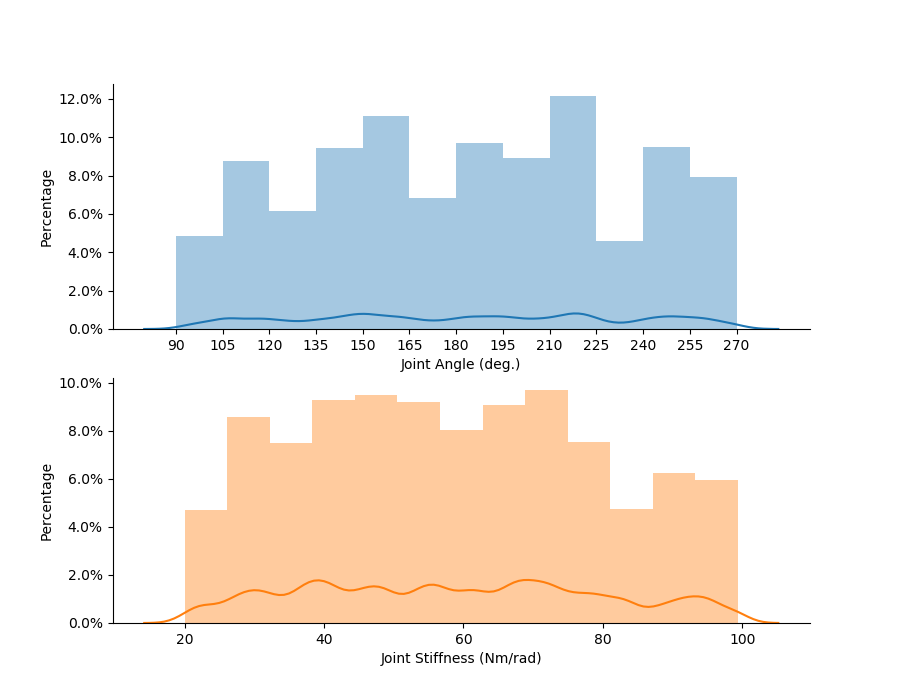
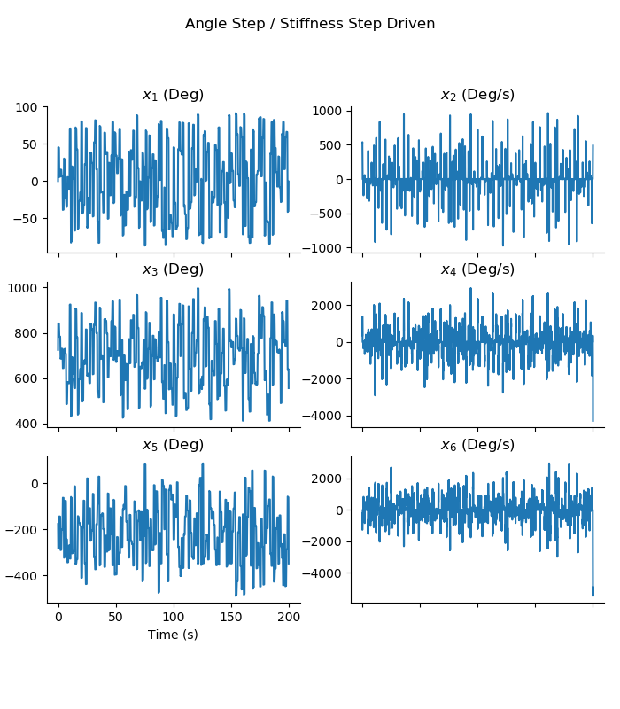
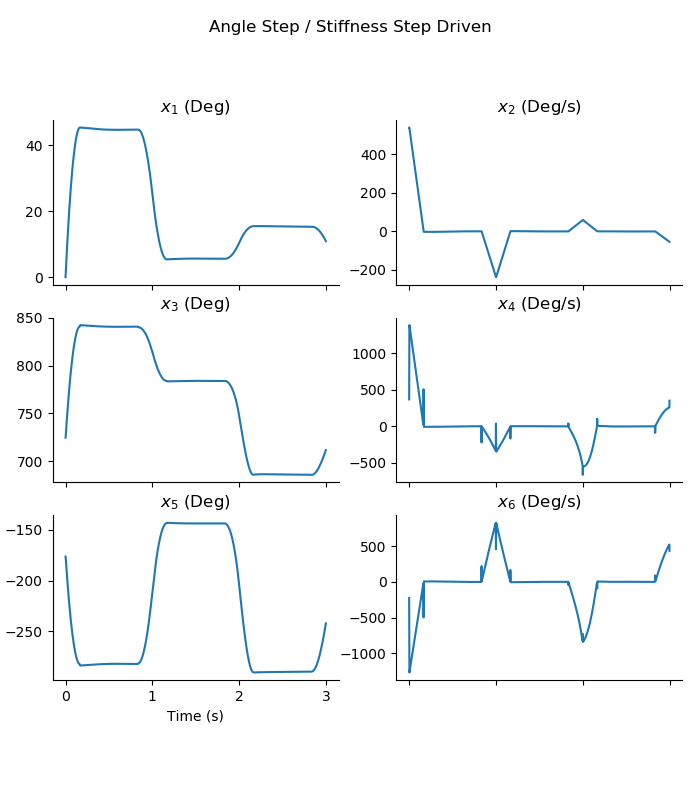
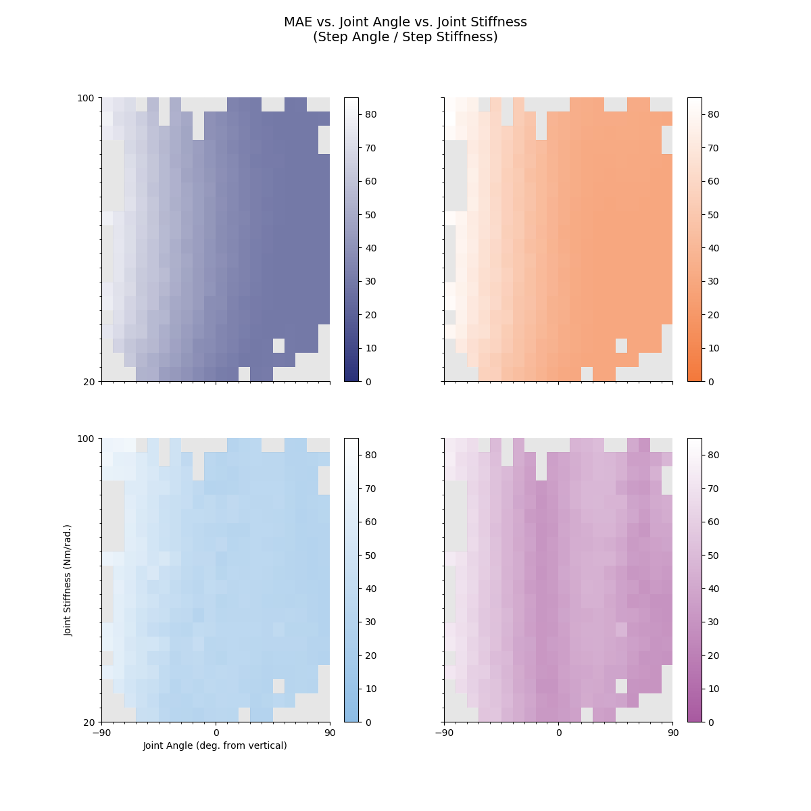

README.md for Figures Created 2020/04/15 at 15:53.23
Notes
Attempting to smooth the point-to-point trajectory by increasing the step duration to 1 second and changing the moving average filter to be 0.1667 seconds long. The following code was added to the plant.generate_desired_trajectory_STEP_STEP() code:
filterLength = int((1/3)/self.dt/2)
b=np.ones(filterLength,)/(filterLength) #Finite Impulse Response (FIR) Moving Average (MA) filter with filter length (3 Hz^{-1} / dt) / 2
a=1
trajectory = signal.filtfilt(b, a, trajectory)With a step duration of 1 second, and a filter length of 0.1667 seconds, each step will have roughly 0.8333 seconds to converge to that point.
Parameters
params = {
'Extra Steps' : 5.0,
'stepDuration' : 1.0,
'numberOfSteps' : 200,
'delay' : 0.3,
'angleRange' : None,
'stiffnessRange' : [20, 100]
}Figures
states_01-01.png

states_01-02.png

states_01-03.png

states_01-04.png

states_01-05.png

Results
It appears that a 3 Hz cutoff for the moving average filter creates movements that are entirely within the range of motion of the joint. It will be important to now see whether or not the simulation duration (200 seconds) is sufficient to sample the trajectory space (ℝ2).
Appended on 2020/04/15 at 16:05.04
Notes
Plotting the error as a function of joint angle and stiffness for the STEP/STEP trajectory (with the given params above).
Parameters
Figures
heatmap_MAE_01-01.png

Results
There appears to be adequate subsampling of the configuration space. There is poor sampling of the boundaries, but that is to be expected for a bounded, uniform sampling in 2D.